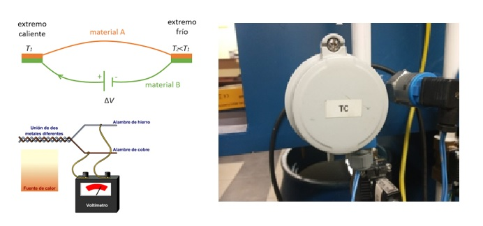

.
El sistema de nivel de líquido tiene como propósito medir la cantidad de líquido en un recipiente o tanque. Esto es importante en muchas aplicaciones industriales y de ingeniería, donde la cantidad precisa de líquido en un proceso es crítica para su eficiencia y seguridad.
El sistema de nivel de líquido puede ser utilizado para controlar el llenado y vaciado de un tanque, o para alertar a los operadores cuando el nivel de líquido está demasiado alto o demasiado bajo y para mantener un volumen deseado de líquido contenido en el tanque.
Del proceso también podemos obtener información sobre la presión y la temperatura.
Un termomagnético es utilizado en los sistemas eléctricos para evitar sobrecargas y cortocircuitos. Consiste en un dispositivo combinado que incluye tanto un interruptor térmico como un interruptor magnético. La función del interruptor térmico es proteger contra sobrecargas eléctricas prolongadas, es decir, corrientes excesivas que puedan dañar los cables o los dispositivos conectados. Cuando la corriente supera un cierto umbral durante un período de tiempo determinado, el interruptor térmico se activa y desconecta el circuito eléctrico, interrumpiendo el flujo de corriente.
Por otro lado, el interruptor magnético protege contra cortocircuitos, que son corrientes eléctricas muy altas que ocurren cuando hay un contacto directo entre conductores de diferentes polaridades. El interruptor magnético detecta rápidamente estas corrientes y desconecta el circuito eléctrico de manera inmediata para prevenir daños mayores.
Los fusibles son dispositivos pequeños de seguridad que forman parte de las instalaciones eléctricas, los cuales se funden cuando la corriente alcanza ciertos valores excesivos. Se conforman por una lámina o un filamento hecho de una aleación o de un metal que se destaca por presentar un punto de fusión bajo.
.
Baliza luminosa
En un entorno industrial, una baliza es un dispositivo de señalización visual que se utiliza para indicar estados de seguridad, advertencias o información importante. Por lo general, las balizas industriales son luces de gran intensidad y colores llamativos, como rojo, amarillo o verde, a menudo se colocan en lugares estratégicos para asegurar una buena visibilidad. Las balizas industriales se utilizan para indicar el estado de un proceso, la presencia de una condición peligrosa o para llamar la atención del personal en situaciones específicas.
En nuestro sistema o kit tiene una baliza de dos colores, rojo y verde, el cual dependiendo en que etapa este, señaliza el funcionamiento del sistema, la programación depende del operador del equipo.
El sistema de señalización es simple de entender y de conectar, en este caso se usa solo los colores, los cuales están alimentados con +24 VCC
Luces piloto
Las luces piloto en un sistema industrial suelen ser pequeñas luces que se utilizan para indicar el estado de funcionamiento de un equipo o sistema. Estas luces son de tamaño reducido y generalmente se encuentran en paneles de control, tableros de instrumentos o equipos individuales. Las luces piloto pueden tener diferentes colores. Las luces piloto proporcionan una indicación rápida y visual del estado de un sistema y son utilizadas por los operadores para monitorear y controlar los equipos.
Las luces piloto están disponibles para brindar control visual de que se está llevando a cabo una función eléctrica en una ubicación local o remota.
La velocidad síncrona de un motor de corriente alterna (CA) está determinada por la frecuencia de AC suministrada y el número de polos en el estator, de acuerdo con la relación:
Donde:
RPM = Revoluciones por minuto
f = frecuencia de suministro AC [Hz]
p = Número de polos
Configuración de parámetros del motor para el variador de frecuencia:
1. Medir las conexiones
- Entre el pin 11(24 [V]) y el pin 4(digital común) el voltaje medido es: 24,7 [V], Existen dos modos SRC y SNK
2. Restablecer a predeterminado
- P112: colocar en 1 y luego aparecerá el error f048, el cual debe ser borrado con stop.
3. Configurar voltaje placa motor
- P101: 230[V]
4. Configurar frecuencia nominal
- P102: 50 [Hz]
5. Configurar Corriente máxima
- P104: 3,4 [A]
6. Configurar Frecuencia máxima y minima
- P104: 0 [Hz] min
- P105: 50 [Hz] max
7. Configurar Arranque por teclado
- P106: “0” (modo por teclado)
8. Inhabilitar reversa
- P104: “1” (inhabilita)
Una bomba centrífuga es un tipo de bomba hidráulica que utiliza la fuerza centrífuga generada por un impulsor rotativo para aumentar la presión y mover fluidos.
- La bomba centrífuga consta de varios componentes. El impulsor es un componente clave que consta de palas curvadas que giran dentro de la carcasa de la bomba.
- Cuando el impulsor gira, crea una fuerza centrífuga que empuja el fluido hacia el exterior y hacia una zona de alta presión llamada difusor.
- El difusor es una estructura en forma de cono o voluta que rodea al impulsor y tiene la función de convertir la energía cinética del fluido en energía de presión.
- A medida que el fluido pasa a través del difusor, la velocidad disminuye y la presión aumenta
Utiliza un motor asíncrono trifásico, también conocido como motor de inducción trifásico, es un tipo de motor eléctrico que utiliza tres corrientes eléctricas alternas que son desfasadas entre sí en 120 grados para crear un campo magnético rotativo que hace girar el motor.
Este tipo de motor se compone principalmente de dos partes: el estator y el rotor. El estator es la parte fija del motor y se compone de un núcleo de hierro laminado, que contiene tres devanados de cobre, conectados en estrella o en triángulo, a través de los cuales circulan las corrientes eléctricas alternas trifásicas.
El rotor, por otro lado, es la parte móvil del motor y se compone de un conjunto de conductores de cobre dispuestos en ranuras de un núcleo de hierro laminado, los cuales están aislados eléctricamente y que forman una jaula de ardilla.
Cuando se aplica corriente eléctrica al estator, se produce un campo magnético rotativo que induce corrientes eléctricas en la jaula de ardilla del rotor. Estas corrientes crean un campo magnético en el rotor que interactúa con el campo magnético del estator, haciendo que el rotor comience a girar.
El dispositivo cuya función es regular el flujo, en este caso hablamos del agua.
- La membrana de la válvula se apoya en el cuerpo con la ayuda del muelle y evita que el agua pase por la presión que ella misma ejerce.
- Al momento de mandar una señal electrica al solenoide de la valvula, la bobina se imanta y levanta el embolo.
- De esta manera queda un pequeño agujero en la tapa de la válvula y permite salir al liquido de la cámara superior.
- Esto hace que funcione como un actuador que hace que se comuniquen la entrada y la salida de líquido del cuerpo de la válvula.
Cuando se produce una vibración o movimiento oscilante, las horquillas oscilan en direcciones opuestas debido a su flexibilidad.
- Estas oscilaciones generan cambios en la resistencia eléctrica de las horquillas debido a un fenómeno conocido como efecto piezoeléctrico.
- El efecto piezoeléctrico implica que ciertos materiales generan una carga eléctrica cuando se deforman mecánicamente
- las horquillas del sensor vibratorio, están hechas de un material piezoeléctrico que genera una señal eléctrica proporcional a la amplitud y frecuencia de la vibración.
- Cuando las horquillas oscilan, la resistencia eléctrica del material cambia, lo que se traduce en una variación en la corriente eléctrica que fluye a través de ellas. Esta variación de corriente se detecta y se convierte en una señal eléctrica de salida.
El dispositivo detecta la presión utilizando una cavidad de presión y un diafragma de aislamiento para formar un capacitor variable
- La presión del proceso provoca una ligera desviación del diafragma de aislamiento del proceso del sensor cerámico.
- El cambio proporcional a la presión en la capacitancia se mide en los electrodos del sensor cerámico
- Este cambio en la capacidad se puede medir eléctricamente y correlacionarse con la presión aplicada
- El sensor capacitivo no requiere liquido de llenado, por tanto, también puede trabajar en aire.

Los termopares son sensores de temperatura robustos cuyo principio de medición se basa en el efecto Seebeck.
- Consta de dos hilos metálicos homogéneos pero diferentes entre sí y aislados en toda su longitud. Los dos cables son soldados juntos en un extremo
- El extremo es llamado “unión caliente o de medición” y el otro extremo es conocido como “unión fría o de referencia”
- Cuando se conectan en un punto los dos conductores eléctricos de distintos materiales, puede medirse una tensión eléctrica débil entre los dos extremos abiertos
- Siempre que haya un gradiente de temperatura en los conductores, esta tensión es denominada “tensión termo eléctrica”
El dispositivo realiza medidas de temperatura utilizando como factor principal de medición la resistencia de un metal.
• La resistencia del alambre de metal se transforma con relación a la temperatura, el funcionamiento de la RTD comienza al calentarse un metal
• Esta acción permite un aumento de temperatura induciendo una mayor agitación térmica y aumento de la resistencia.
• Se maneja el concepto de a mayor temperatura, mayor agitación y mayor Resistencia y a menor temperatura, se tiene menor agitación y menor Resistencia.
• La relación resistencia-temperatura se representa con la siguiente formula: R=Ro[1+a(T-To)]
Se basa en el principio de medida “Time of flight” y van detectando continuamente el nivel del líquido en el tanque
• Pulsos ultrasónicos son emitidos reflejados en la superficie del líquido y son recibidos por el sensor
• La distancia entre el instrumento y el líquido se puede calcular midiendo el “tiempo de vuelo”.
• Las ondas ultrasónicas, son ondas mecánicas, generados piezo- eléctricamente y reflejados en la superficie del líquido debido a la diferencia de densidad entre el aire y el liquido
• El periodo de tiempo medido y analizado por el instrumento, entre enviar y recibir el pulso, es una medida directa para calcular la distancia entre la membrana del sensor y la superficie del liquido

Detectar diversos tipos de señales del proceso, elaborar y enviar acciones, recibe configuraciones de los operadores y da reporte a los mismos.
Partes principales son la CPU, un módulo de memorias y de entra das/salidas, la fuente de alimentación y la unidad de programación.
Módulos de entrada y salida (E / S)
• Son de dos tipos. Puede ser digital o analógico.
• Se debe proporcionar información al controlador PLC.
• M.E: Proporcionan una interfaz para dispositivos de entrada como diferentes tipos de interruptores (interruptor de botón, interruptor selector, interruptor limitado), sensores, etc.
• M.S: proporcionar una interfaz para dispositivos de salida como motor, ventilador, relé, luz, lámpara, calentador eléctrico, válvula solenoide, zumbador, etc.
Fuente de alimentación
• Proporciona energía a todos los demás componentes para operar. Proporciona energía a los módulos de entrada / salida, sistema de memoria y procesador.
• Proporcionar la alimentación de CC o CA para operar el PLC.
Unidad de procesamiento central (CPU)
• La función de la CPU es almacenar y ejecutar los programas de software.
• Es la parte que se encarga del procesamiento de la información y está basado en un microprocesador y memorias.
• La unidad de memoria se comunica con el microprocesador para leer y escribir información.
Sistema de memoria
Todo PLC posee una memoria organizada en área de trabajo específicas que son:
• ROM (Read only memory). Memoria de solo lectura o memoria del sistema operativo y no es accesible por el usuario, allí se almacenan los programas.
• RAM (Random access memory). Memoria de acceso aleatorio, memoria de datos o memoria de usuario, es una memoria volátil, almacena la información de las variables de entrada y salida.
• Memoria insertable (EPROM, EEPROM). Si se quiere garantizar totalmente el contenido de la información sin que se pierda el programa efectuado, éste deberá almacenarse y grabarse en memorias EPROM o EEPROM que son de tipo chips.
Cuando el líquido fluye a través de la tubería, la rueda de paletas con 4 imanes insertados se pone en rotación, produciendo una señal de medición en el sensor.
El voltaje inducido modulado en frecuencia es proporcional a la velocidad de flujo del fluido.
Los valores nominales de presión y temperatura deben respetarse de acuerdo con el material de montaje del sensor seleccionado.
El tamaño de tubería adecuado se selecciona utilizando el diagrama para seleccionar el diámetro nominal del accesorio del sensor.
Un factor K, específico para cada tubería (tamaño y material) permite convertir esta frecuencia en un caudal
FUNCION:
Controlar y medir el volumen de líquido proporcionado al sistema.
• Proporciona información del caudal de líquido que pasa a través de las tuberías. Todo esto gracias a un rodete que gira en proporción al fluido que pasa por la tubería.
• Tensión de alimentación: 115/230 VCA y cuenta con 2 relés para realizar la dosificación.
DESCRIPCION DE TIPO
• El caudalímetro o dosificador 8035 es apto para la medición/dosificación de líquidos neutros o ligeramente agresivos sin sólidos en suspensión.
• El caudalímetro se compone de un racor de conexión con sensor integrado y un transmisor electrónico que se conectan entre sí, de una forma rápida y sencilla, mediante un sistema de bayoneta.
• Indicación del caudal instantáneo y dos totalizadores.
• Simulación de las salidas sin presencia de fluido.
• Para modelo dosificador: Contador de cantidades totales y diarias e indicador de dosificación por volumen o peso.
El dosificador 8035 cuenta con 3 tipos de dosificación
• Dosificación en modo manual
• Dosificación en modo automático
• Dosificación manual y automática
• El día 20 de abril, se llevo a cabo la limpieza del sistema del sistema de nivel de liquido. Se verifico que el nivel de agua se encontró en optimas condiciones .
• Se procedió a retirar la suciedad acumulada (polvo y agua residual) para asegurar un buen funcionamiento.
Se utilizo:
• Guantes, detergente, agua limpia, trapos y Escoba.
• Finalmente se realizo una prueba de funcionamiento y se confirmo que el sistema de nivel de liquido esta operando correctamente.
• El día 24 de abril, se realizó el aumento en los tubos PVC del sistema de nivel de agua para corregir el caudal de líquido que caía desde la pared del tanque en lugar de caer desde arriba.
• Se verifico que la instalación original no permitía mantener una altura de líquido adecuada y esto afectaba el funcionamiento del sistema
• Se procedió a desmontar los tubos PVC existentes y a instalar nuevos tubos con una mayor inclinación, permitiendo que el caudal de agua caiga desde arriba de manera adecuada.
• Una vez finalizada la instalación, se realizó una prueba de funcionamiento y se confirmó que el sistema de nivel de líquido está operando correctamente.
Nivel de un tanque con restricción de descarga
El caudal de salida q_s depende de la restricción R.
La válvula de salida No interviene en el proceso (No influye en la restricción)
La altura h depende del caudal de entrada q_e.
El caudal de salida q_s también depende de la altura h.
El caudal de entrada debe ser suficiente para permitir que se tenga un caudal de salida y permita el aumento de nivel
Donde: el sistema tiene un polo en: -a0
k: es la ganancia de estado estacionario, la cual entrega el valor que toma la respuesta del sistema para un tiempo que tiende a infinito.
k=b0/a0
La constante τ , es la constante de tiempo, la cual indicara el tiempo en el cual el sistema tiene un 63,21% del valor en estado estacionario.
τ=1/a0
Análisis de la respuesta a un escalón:
Si partimos de la suposición que nuestro sistema no posee retardo, nuestras funciones de transferencia de primer orden y ecuación temporales del sistema, estarían regidas por:

De esa forma si sustituido de la ecuación temporal de primer orden anterior la variable de tiempo por diferentes valores, podremos obtener la respuesta dinámica característica del sistema de primer orden.
Para la implementación de datos, se realizó la medición de nivel de flujo en el tiempo para un caudal de entrada constante (el mismo caudal que utilizamos para obtener la función de transferencia teórica).
La medición de nivel de líquido se realizó cada 10 segundos para obtener resultados óptimos.
Entonces con los siguientes datos:
Caudal de entrada: Q_e=261[〖cm〗^3/s]
Tiempo de medición: t=10 s
Con ello, empezamos a tomar nota de los datos en una tabla Excel.
Se hizo la acumulación de 256 muestras en aproximadamente 43 min.
Métodos para diseñar un controlador en el espacio de estados:
Existen varios métodos para diseñar un controlador en el espacio de estado para un sistema de control. Estos métodos incluyen:
1. Colocación de polos: este método consiste en colocar los polos de circuito cerrado del sistema en las ubicaciones deseadas para lograr el rendimiento deseado. El método de colocación de polos se puede realizar utilizando diferentes técnicas, como la fórmula de Ackermann, la colocación de valores propios y el regulador cuadrático lineal (LQR).
2. Regulador cuadrático lineal (LQR): este método implica minimizar una función de costo cuadrático que representa el rendimiento del sistema y el esfuerzo de control. El método LQR se puede utilizar tanto para sistemas de entrada única y salida única (SISO) como de entrada múltiple y salida múltiple (MIMO).
3. Control óptimo: este método implica encontrar la entrada de control que minimiza una función de costo que representa el rendimiento del sistema y el esfuerzo de control. El método de control óptimo se puede utilizar tanto para sistemas lineales como no lineales.
4. Control infinito H: este método implica diseñar un controlador que minimice el rendimiento del sistema en el peor de los casos sujeto a ciertas restricciones. El método de control H-infinity se puede utilizar para sistemas SISO y MIMO.
Método colocación de polos:
- Con la fórmula de Ackerman:
Un método utilizado para transformar un controlador de espacio de estado en una matriz de ganancia de retroalimentación para un sistema lineal. La fórmula está dada por:
• Una vez obtenido los valores de N=20.42 y k=26.67:
• El sistema tenga un tiempo de establecimiento de 4 min
• Un máximo sobrepaso menor al 1%
• Si bien la simulación en matlab es buena, al introducir los valores de N y K al PLC, esta manda una señal de “fault”
• El Sistema no functional
• Modificando el tiempo de establecimiento de 8 min
• Obtenemos los valores de N=13.183 y k=2.733:
• La simulación en Matlab es buena, al introducir los nuevos valores de N y K al PLC, este ya no manda una señal de “fault”
• El sistema funciona.